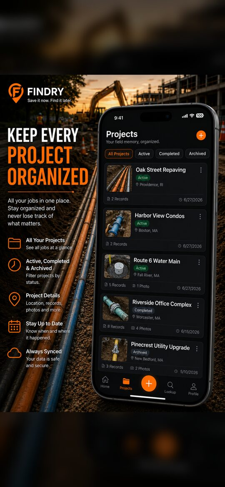

Findry
Save it now. Find it later.
Findry is a field documentation and jobsite memory app for contractors, utility crews, excavators, plumbers, electricians, inspectors, and anyone who needs to record important jobsite information and find it again. Every record belongs to a project, so details stay organised whether you return to a job next week or in five years.
Screenshots



What it does
Save records in seconds
Capture photos, depths, measurements, pipe sizes, materials, valve locations, reference points, and field notes before they are forgotten.
Organise every project
Each project keeps its own records, photos, reference points, and notes, from a residential repair to a large infrastructure installation.
Find it later
Search and browse your saved field information when you come back to a job — next week or next year.
Details
Need help with Findry?
Email the studio and mention the app name.